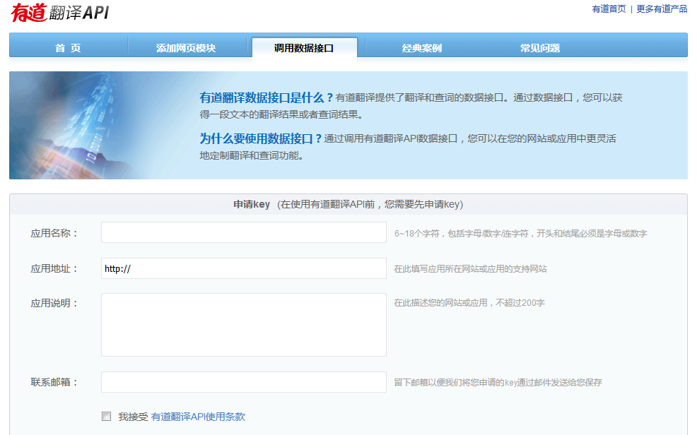
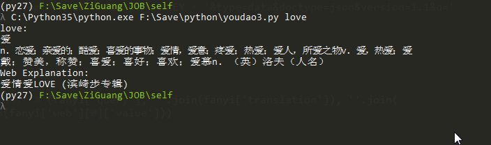

有道+命令行
这个功能本身在我的公众号上首先实现的，欢迎关注我的公众号
有道 API
点击 http://fanyi.youdao.com/openapi?path=data-mode 进行申请 有道翻译 API 即可利用 有道翻译 词库，如下图，提交相关信息，即可实现。

python
分别利用 Python2 与 Python3 实现 命令行 翻译功能
所要利用 の 模块
- sys 作 命令行 接收 参数
- urllib 作 获取 数据
- json 作 解析 json
实现
利用 有道 API 的 数据格式 分析 -- JSON 获取 我们需要的数据 实现 Python2 版 代码
# -*- coding: utf-8 -*-
import urllib2
import json
# 这里最大问题 即 仅仅支持 py2
import sys
reload(sys)
sys.setdefaultencoding('utf-8')
def youdao(word):
qword = urllib2.quote(word)
ID = '你的 id'
KEY = '你的 key'
baseurl = r'http://fanyi.youdao.com/openapi.do?keyfrom=' + ID + '&key=' + KEY + '&type=data&doctype=json&version=1.1&q='
url = baseurl+qword
resp = urllib2.urlopen(url)
resp.encoding = 'utf-8'
fanyi = json.loads(resp.read())
if fanyi['errorCode'] == 0:
if 'basic' in fanyi.keys():
trans = u'%s:\n%s\n%s\nWeb Explanation:\n%s' % (fanyi['query'], ''.join(fanyi['translation']), ''.join(
fanyi['basic']['explains']), ''.join(fanyi['web'][0]['value']))
print trans
else:
trans = u'%s:\nBase Translation:%s\n' % (
fanyi['query'], ''.join(fanyi['translation']))
print trans
else:
return u'Sorry,Spelling %s is Error...[ErrorCode is %s]' % (word, fanyi['errorCode'])
实现 Python3 版 代码
import urllib.parse
import urllib.request
import json
import sys
def youdao(word):
qword = urllib.parse.quote(word)
ID = '你的 id'
KEY = '你的 key'
baseurl = r'http://fanyi.youdao.com/openapi.do?keyfrom=' + ID + '&key=' + KEY + '&type=data&doctype=json&version=1.1&q='
url = baseurl+qword
resp = urllib.request.urlopen(url)
resp.encoding = 'utf-8'
fanyi = json.loads(resp.read().decode('utf-8'))
if fanyi['errorCode'] == 0:
if 'basic' in fanyi.keys():
trans = u'%s:\n%s\n%s\nWeb Explanation:\n%s' % (fanyi['query'], ''.join(fanyi['translation']), ''.join(
fanyi['basic']['explains']), ''.join(fanyi['web'][0]['value']))
print(trans)
else:
trans = u'%s:\nBase Translation:%s\n' % (
fanyi['query'], ''.join(fanyi['translation']))
print(trans)
else:
return u'Sorry,Spelling %s is Error...[ErrorCode is %s]' % (word, fanyi['errorCode'])
if __name__ == '__main__':
# 支持 命令行 调用
word = sys.argv[1]
youdao(word)
完成效果

需要改进的地方
这样做会出现延迟 (待解决)，输出(打印)可以格式化的更加好看，例如更加清晰，更加高亮等等。
Refer: http://lazynight.me/3378.html
Comments !